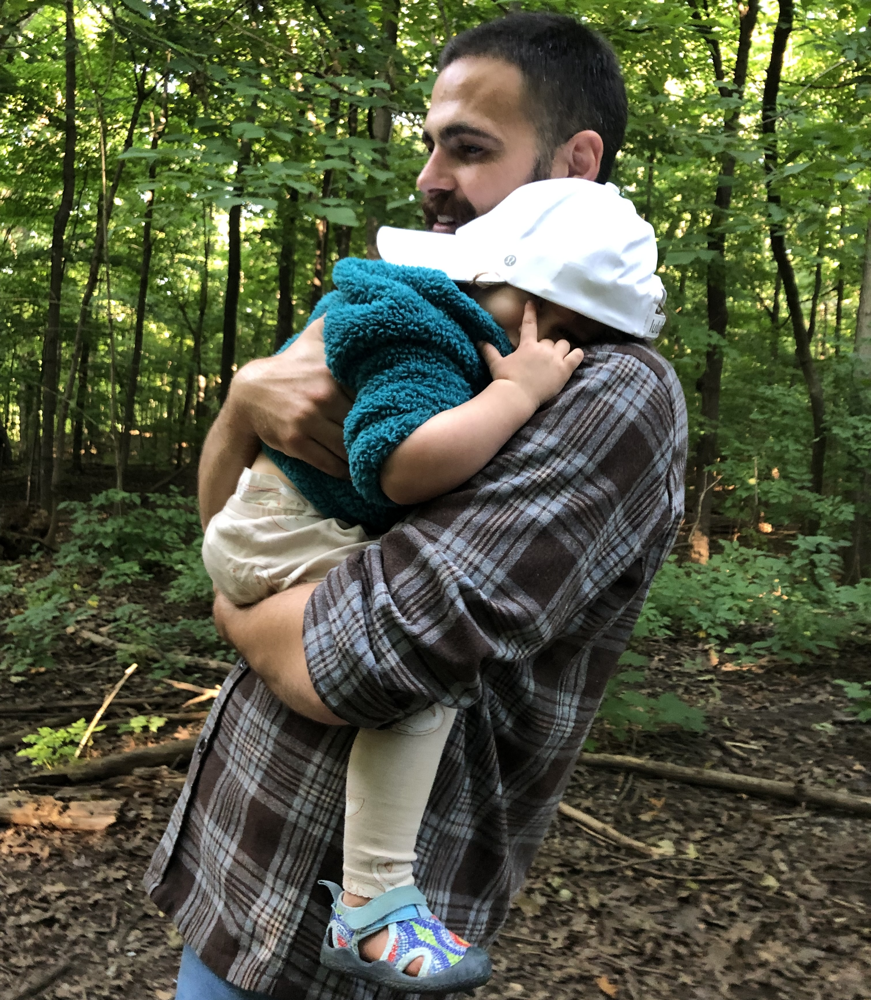

I am a political theorist and currently a SSHRC Postdoctoral Fellow at McGill University and L’Université de Montréal, where I am a member of the Research Group on Constitutional Studies and the Centre canadien d’études allemandes et européennes, respectively. Previously, I was a Visiting Assistant Professor at Deep Springs College. I hold a PhD and an MA in Government from Harvard University.
My research and teaching expertise are in 20th century political thought and ancient political thought, and I study how ‘ethics’ and ‘politics’ intersect in domains such as labour, education, self-cultivation, physical training, and decolonization. I am also a specialist in the thought of Michel Foucault.
My question: How, if at all, can changing the self change the world? And is this question itself a neoliberal trap?
EDUCATION
PhD and MA in Government
Harvard University, 2016–2022
Dissertation: Powers of Practice: Michel Foucault and the Politics of Asceticism
Committee: Danielle Allen (chair); Katrina Forrester; Elizabeth Lunbeck; Panagiotis Roilos
MA in Political Science
University of Toronto, 2014–2015
BA (First Class Honours) in Contemporary Studies and English, with Minor in Classics
University of King’s College and Dalhousie University, 2009–2014
BIO
Originally from Sudbury, ON, I spent my youth and early adulthood in Canada.
My first postsecondary degree was a combined BA Honours at Dalhousie University and the University of King’s College in Halifax, NS. There I studied in English Literature (I had a particular interest in Shakespeare and poetry) and Contemporary Studies, one of King’s College’s flagship interdisciplinary programs that studies the modern world by combining history of science, political theory, philosophy, literature, and film studies, among other things. I also received a minor in Classics, and took a special interest in Greek language and literature, and above all in Homer, Plato, Aristotle, and the Hellenistic thinkers.
I then moved to Toronto, ON in 2014 to complete an MA in Political Science, where I was schooled in the political theory canon and undertook targeted studies of Plato and the post-Marxist tradition. Before going on to begin my PhD, I took a gap year during which I worked at a yoga studio, undertook a course of study to be certified as a yoga teacher, and was introduced to the philosophy and practice of the Yogic and Buddhist traditions. This course of study and practice continues to shape my research.
In 2016 I moved to Cambridge, MA to begin my PhD and MA in Government at Harvard University. From 2016-2022, I completed my dissertation, taught in Harvard’s General Education Program, and intensively studied various languages alongside my course work.
My interest in languages and cultures – and especially, via Foucault, in the French language – has significantly shaped the course of my career and has instilled in me an international and comparative approach to research. I have reading knowledge of Latin and advanced knowledge of Ancient Greek (including Greek prose composition), and I am fluent in German and French. Currently I am having a lot of fun advancing my knowledge of Modern Greek at an intermediate level.
My love of French language(s) and culture(s) brought me to spend a good deal of time over the summers of my PhD studying French in Quebec (Montréal, Chicoutimi, Québec City), and to spend the year of 2019-2020 studying and undertaking doctoral research at the Ecole Normale Supérieure and the Bibliothèque Nationale de France in Paris.
After completing my PhD in 2022, I taught at Deep Springs College (California), and am now thrilled to be undertaking postdoctoral research in the bilingual environment of Montréal under the supervision of Professor William Clare Roberts (McGill). Since 2022 I have also had the great privilege of research/study stays in Greece (at the European Cultural Center of Delphi), France (at the Bibliothèque du Saulchoir), and Germany (at the Humboldt Universität zu Berlin’s Center for Social Critique).
Most importantly, since 2021 I have been one of Eleanor Tilleczek’s very proud and grateful parents.
